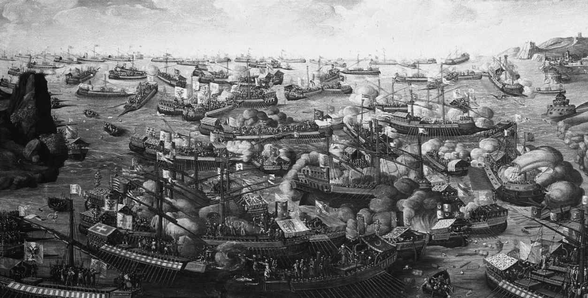

16世纪的伊斯兰世界给人留下了极为深刻的印象。苏莱曼、阿克巴和阿拔斯统治的帝国至少堪与世界其他帝国相匹敌。然而，17世纪时，这些帝国开始衰落。到18世纪，它们已远远落后于西欧，而且至今仍然落后。
一种解释是，统治这些帝国的王朝都很腐败。1566年，谢里姆二世继承苏莱曼一世，他懒惰、愚钝、放荡，嗜酒如命，其臣民都称他为酒鬼谢里姆。在阿拔斯以后的波斯和阿克巴以后的印度也出现了同样的情况。不过，王朝的没落并非造成伊斯兰国家遭摧毁的唯一因素。所有欧洲王室都有过昏聩无能、不负责任的统治者，但他们的国家并未因此而衰亡。

图126 勒班陀战役于1571年10月7日在希腊沿海爆发。在这场16世纪规模最大的海战中，西班牙人和他们的意大利盟军在奥地利的唐·约翰的指挥下，一举击溃了土耳其舰队，从而消除了奥斯曼人对西地中海的威胁。
对于伊斯兰世界的种种不幸，还有一个较根本的解释：它缺乏欧洲的动力。它未经历过（我们将在第二十二、二十三章提到的）这些世纪中正在使欧洲社会发生彻底变革的种种影响深远的变化。例如，在经济领域，无论农业、工业、金融方法或商业组织，均未发生根本变化。如果在17、18世纪时，有位旅行者进入伊斯兰国家，那他一定会看到早500年时十字军战士已目睹的经济惯例和经济制度。正如巴斯贝克所说的，只要统治者精悍、开明，专制帝国就能顺利、有效地发挥作用。但是，如果中央政府衰弱了，那么，朝臣、官吏和军官们就会勾结起来，诈欺社会的生产阶级，不管后者是农民、工匠，还是商人。他们的敲诈勒索无人管束得了，扼杀了私营企业和个人活力。平民百姓中凡是稍微露富的，均为肆意搜刮者的攻击对象。因此，商人们都藏匿自己的财产，而不是公开投资，以扩大自己的买卖。
衰落中的奥斯曼帝国
18世纪末英国领事和商人威廉·伊顿在奥斯曼帝国待了许多年。他那关于奥斯曼帝国情况和机构的吸引人的报告，反映出自全盛时期以来奥斯曼帝国已衰落到何种程度。*
出于这些原因，普通常识即便是对受过教育的人来说也知之甚少，每个人都应该了解自己的事务和专业知识，有了这些知识，任何其他人的干涉都被认为是愚昧无知和不合时宜的。拥有普通科学常识的人，即在基督教欧洲被认为是极为常见和有用的人，在奥斯曼帝国是没有名气的。除工匠外，如果有人去关心如何铸造大炮、建造船只之类的事情，人们会认为简直和疯子差不多。这种狭窄的视野导致的必然结果是，不论是文科教授还是理科教授都是十分无知的，且这种极端荒谬的言论还和他们的种种推测交织在一起……
从穆夫提（伊斯兰教教法说明官或宗教领袖）到农民，人们普遍认为共有七重天，地球被一根大链子固定地悬挂着；太阳是一个巨大的火球，至少也和奥斯曼帝国的范围一样大，它形成的唯一目的就是为地球提供光和热；月食是因为一条巨龙想吞食月亮而引起的；固定不变的星星是用链子挂在最高一层天空中的……
他们用不同的蔑称来区分不同的基督教国家。土耳其人常用来称呼那些非奥斯曼人及其国家的名词有：
| 阿尔巴尼亚人 | 卖下水的人 |
| 亚美尼亚人 | 吃垃圾的人，扛包的人 |
| 波斯人和巴尔干人 | 懒汉 |
| 基督徒 | 偶像崇拜者 |
| 荷兰人 | 奶酪贩子 |
| 英国人 | 无神论者 |
| 佛兰芒人 | 皮条客 |
| 法国人 | 没有信仰的人 |
| 格鲁吉亚人 | 好吃懒做的人 |
| 德国人 | 渎神的异教徒 |
| 希腊岛民 | 傻瓜 |
| 意大利人或弗兰克人 | 杂交人种 |
| 犹太人 | 污秽的狗 |
| 摩尔多瓦人 | 懒惰的人 |
| 波兰人 | 傲慢无礼的异教徒 |
| 俄国人 | 疯狂的异教徒 |
| 西班牙人 | 懒人 |
| 鞑靼人 | 吃腐肉的人 |
| 瓦拉几亚人 | 吉卜赛人 |
有一桩真事：几年前有一个博学的法官瞎了一只眼。他得知当时君士坦丁堡有一个欧洲人会制假眼，做的假眼和真的一样，就立即去买了一只。但是，当他把假眼安到眼窝中时，他勃然大怒，立刻去找造假眼的人，骂他是个骗子，因为他用假眼根本就看不见东西。造假眼的那人生怕到手的钱又被讨回去，就向法官保证，不久之后他的假眼就能和真眼一样看东西了。法官平静下来，撒谎的人得到了回报。做假眼的人立即处理完剩下的假眼存货，离开了那些希望用他的假眼看到东西的土耳其人……
* W. Eton, A Survey of the Turkish Empire, 4th ed.（London, 1809）, pp. 190-193.
帝国衰微的又一症状和原因是，穆斯林对西方有一种优越感：妄自以为自己是不可战胜的。当时，他们根本没有想到，自己或许能从邪教徒即异教徒那里学到些什么。他们这种态度，部分是源于宗教偏见，部分是源于伊斯兰教在过去的惊人成就。伊斯兰教已从一个默默无闻的小教派成长为世界上最大的、发展最迅速的宗教。因此，凡是有关基督教欧洲的东西，穆斯林的官吏和学者都看不起，表示出一种傲慢。1756年，当法国驻君士坦丁堡大使宣告法奥同盟成立——它标志着欧洲外交史上的一个转折点——时，却得到了草率无礼的通知：奥斯曼帝国政府“对一头猪与另一头猪的联合”[4]不感兴趣。这种态度，在16世纪也许是可以理解的，但在18世纪，则无异于自取灭亡。
这种唯我独尊的态度所带来的最有破坏性的后果之一是，在伊斯兰世界和西方之间，特别是在愈益重要的科学领域，放下了一道思想铁幕。实际上，穆斯林学者对于帕拉切尔苏斯在医学方面，维萨里和哈维在解剖学方面，哥白尼、开普勒和伽利略在天文学方面的划时代成就一无所知。不但他们不了解这些科学进步，而且穆斯林科学本身已停止发展，并对未来的新发现几乎没有什么动力。
可以说明伊斯兰帝国何以衰落的最后一个因素是，这三大伊斯兰帝国都是陆上帝国。它们的缔造者土耳其人、波斯人和莫卧儿人都属没有航海传统的民族。他们的帝国是向内面向中亚的陆地，而不是向外面对大海。这些帝国的统治者对海外贸易极不感兴趣，因此，当葡萄牙人开始夺取印度洋商路的控制权时，他们的反应却很小，甚至根本没有反应。
这种形势的意义在于，欧洲人能在不遭受穆斯林反对的情况下，成为世界商路的主人，而以往欧亚之间的大部分贸易一向都控制在穆斯林手里。这一影响是深远的，因为对世界贸易的控制使欧洲人极大地富裕起来，并进一步促进了他们的经济、社会和政治发展。于是，一个恶性循环也就逐步形成：西欧因从事世界性贸易而愈来愈富裕、愈来愈拥有生产力和动力、愈来愈实行扩张政策，而一度令人生畏的伊斯兰帝国则因很少参与新的世界经济而仍处于静止状态，并愈来愈落到后面。
［推荐读物］
与本章直接相关的是J. J. Saunders所编的极好的资料集The Moslem World on the Eve of Europe's Expansion（Prentice Hall出版社，1966）。T. W. Arnold所著的The Preaching of Islam, rev. ed.（Constable出版社，1913）详细描述了自穆罕默德时代至19世纪末伊斯兰教的传播。
关于诸伊斯兰帝国，见H. A. R. Gibb和H. Bowen所著的Islamic Society and the West, Part 1 and 2（Oxford University出版社，1950，1957）: H. Inalcik所著的The Ottman Empire: The Classical Age, 1300—1600（Weideneld and Nicolson出版社，1972）；多卷本Cambridge History of Iran（Cambridge出版社，1968ff.）: N. Itkowitz所著的Ottoman Empire and Islamic Tradition（University of Chicago出版社，1980）；笔法轻松的S. Wolpert所著的A New History of India（Oxford University出版社，1977）；和R. Dunn所著的The Adventures of Ibn Battuta: A Muslim Traveller in the Fourteenth Century（University of California出版社，1986），后者对伊斯兰世界作了发人深省的概述。
最后，关于穆斯林诸帝国的衰落，见J. J. Saunders的The Problem of Islamic Decadence, Jounal of World History 7（1963）, 701—720: T. Stoianovichs的Factors in the Decline of Ottoman Society in the Balkans, Slavic Review, 21（December 1962）, 623-632, 和B. Lewis的Some Reflections on the Decline of the Ottoman Empire（见C. M. Cipolla所编的The Economic Decline of Empires, Methuen出版社，1970, pp. 215-234）。
［注释］
[1]Mehmed Pasha, Ottoman Statecraft: The Book of Counsel for Vezirs and Govenors, W. L. Wright, ed. and trans.（Princeton University，1935）, p. 21.
[2]C. T. Foster and F. H. B. Daniell, eds., The Life and Letters of Ogier Ghiselin de Busbecq（London，1881）, pp. 221，222.
[3]C. T. Foster and F. H. B. Daniell, eds., The Life and Letters of Ogier Ghiselin de Busbecq（London，1881）, pp. 154，155.
[4]Cited by W. Eton，A Survey of the Turkish Empire（London，1809）, p. 10.